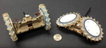

Robot avestruz construido para la exploración planetaria
Puede parecerse a un avestruz galope sobre el suelo, pero el Planar Elliptical Runner podría convertirse en el modelo de un robot de tamaño humano e incluso ayudar a la exploración planetaria.
noticias pares
Fecha:03.05.2017
La mano biónica que puede ver por sí misma
Una mano artificial está utilizando la inteligencia artificial para ver con un ojo artificial. La nueva prótesis puede elegir la mejor forma de agarrar objetos colocados delante de ella automáticamente, lo que facilita su uso.
Los seres humanos todavía están evolucionando, Entonces, ¿dónde nos llevará la evolución en 1.000 años?
Lo más probable es que seremos más altos. Los seres humanos ya han visto un auge de la altura en los últimos 130 años.
noticias pares

15.03.2017
La NASA crea un Rover explorador inspirado en Origami
La NASA ha comenzado a probar un robot explorador inspirado en origami que se utilizará para explorar la superficie marciana.